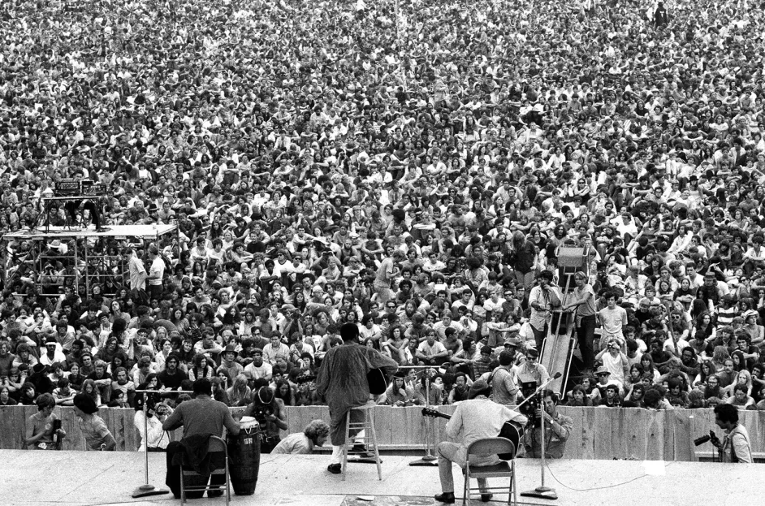

En agosto de 1969, más de 400,000 personas se reunieron en una granja de Bethel, Nueva York, para vivir uno de los eventos más influyentes de la cultura pop. El festival de Woodstock no fue solo una serie de conciertos, sino tambiénun símbolo de la contracultura de los años 60. Fue una manifestación colectiva de paz, libertad y unidad en un momento en que los Estados Unidos estaban envueltos en el conflicto de Vietnam, tensiones sociales por los derechos civiles, y un profundo cambio generacional. La música fue el vehículo que unió a todos aquellos que buscaban un cambio, y los campos de Bethel se convirtieron en un refugio temporal donde los jóvenes podían expresar sus deseos de un mundo más pacífico.
El Festival de Woodstock, oficialmente llamado Woodstock Music & Art Fair, fue organizado por Michael Lang, Artie Kornfeld, Joel Rosenman y John Roberts. Estos emprendedores inicialmente planearon el evento como una manera de recaudar fondos para la construcción de un estudio de grabación en la pequeña ciudad de Woodstock, Nueva York, conocida por ser un refugio para artistas. Sin embargo, al crecer la magnitud del evento, y debido a la negativa de Woodstock para acogerlo, el festival fue trasladado a una granja lechera en Bethel, propiedad de Max Yasgur.
El festival estaba pensado para albergar a unas 50,000 personas, pero la asistencia final superó todas las expectativas. Más de 400,000 personas llegaron al lugar, muchas de ellas sin boletos. Debido a la abrumadora cantidad de gente, las cercas del evento fueron derribadas y el acceso se volvió gratuito. A pesar de los enormes desafíos logísticos, la falta de alimentos y agua, y el mal tiempo, el festival transcurrió sin incidentes graves, lo que reflejó el espíritu pacífico de los asistentes.
Woodstock no fue solo un evento masivo de música, fue la plataforma que catapultó a muchas leyendas de la música a la fama mundial. Con una alineación que incluía a algunos de los artistas más influyentes del rock, folk y soul de la época, el festival brindó actuaciones memorables que, hasta el día de hoy, siguen siendo recordadas por su impacto cultural y musical.
El festival comenzó el 15 de agosto de 1969 con la actuación de Richie Havens, quien tuvo que improvisar varias canciones adicionales debido a que muchos artistas llegaron tarde a causa del tráfico. A lo largo de los tres días, una gran variedad de géneros fue representada, desde el rock psicodélico de Jefferson Airplane hasta el folk de Joan Baez. Una de las actuaciones más icónicas fue la de Jimi Hendrix, quien cerró el festival con una poderosa interpretación de "The Star-Spangled Banner", llena de distorsiones y efectos que evocaban los horrores de la guerra de Vietnam.

El legado de Woodstock sigue vivo más de medio siglo después. Su influencia puede verse en la proliferación de festivales de música alrededor del mundo y en la forma en que la música continúa siendo un medio de protesta y expresión cultural. Woodstock no fue solo un festival, fue un punto de inflexión que demostró cómo la música podía unir a las personas y generar un cambio duradero.
Desde entonces, ha habido intentos de revivir y celebrar el espíritu de Woodstock, conmemorando sus aniversarios con festivales como Woodstock '94 y Woodstock '99. Aunque estos eventos no lograron captar el mismo nivel de impacto cultural que el original, sí demostraron el poder de la nostalgia y el deseo de reconectar con el pasado.
Documental